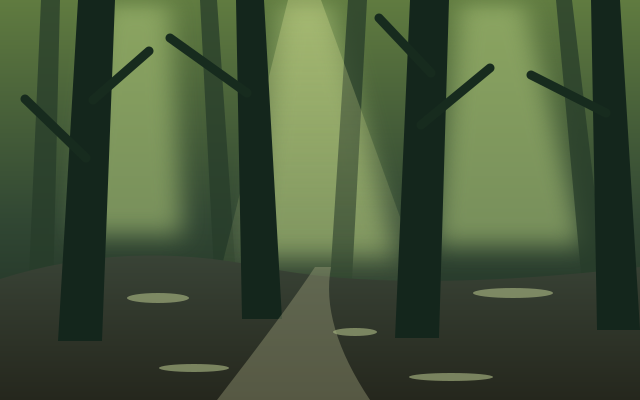
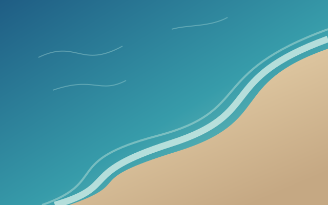

I love this time of day, when the sky slowly changes color.
♡ 128⇄ 24▤ 16↗
I love this time of day, when the sky slowly changes color.
The colors of the sunlit forest spread beyond the edges of the photo.

The colors and light keep moving.#colorstudy
Colors from portrait videos spread to both sides, too.
A study in blue. The colors of both photos flow into their surroundings.

Text-only posts give the light a rest.
A quiet pause until the next photo.